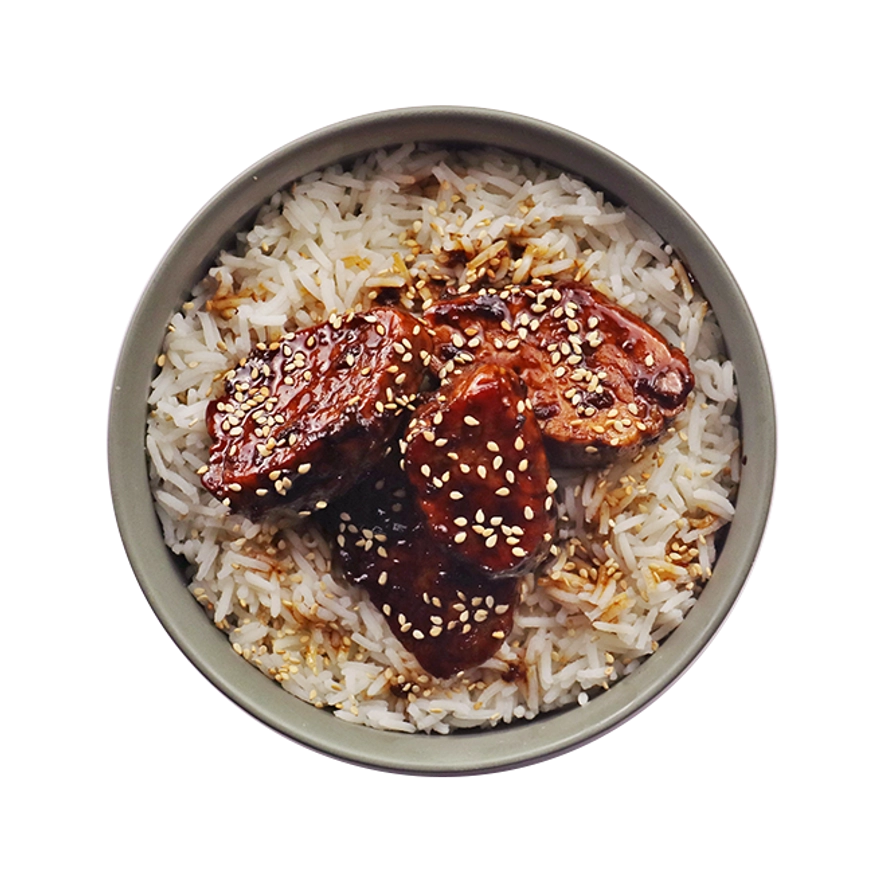

Caramelized Vegi
60min - 550 kcal/per person
- 00g Tofu
- 00g Carrots
- Sugar
- Fish sauce
- Oyster sauce
- tsp rice vinegar
- tsp cumin
- Salt
- Thinly slice the pork and mix it in a bowl with soy sauce, fish sauce, oyster sauce, pepper, and garlic. Let it marinate for at least 15 minutes.
- In a large pan or wok, heat the sugar with 1 tbsp of water over medium heat. Let it melt and turn amber
- Once it caramelizes, quickly add the marinated pork
- Sear and coat the pork in the caramel. Cook until it’s browned and caramelized, about 5–7 minutes.
- Push the pork to the side. Add a bit more oil if needed.
- Stir-fry the onion, carrots, and broccoli first
- Taste and adjust seasoning — more soy, sugar, or vinegar to balance sweet/savory/sour
- Spoon over steamed rice
- Enjoy !